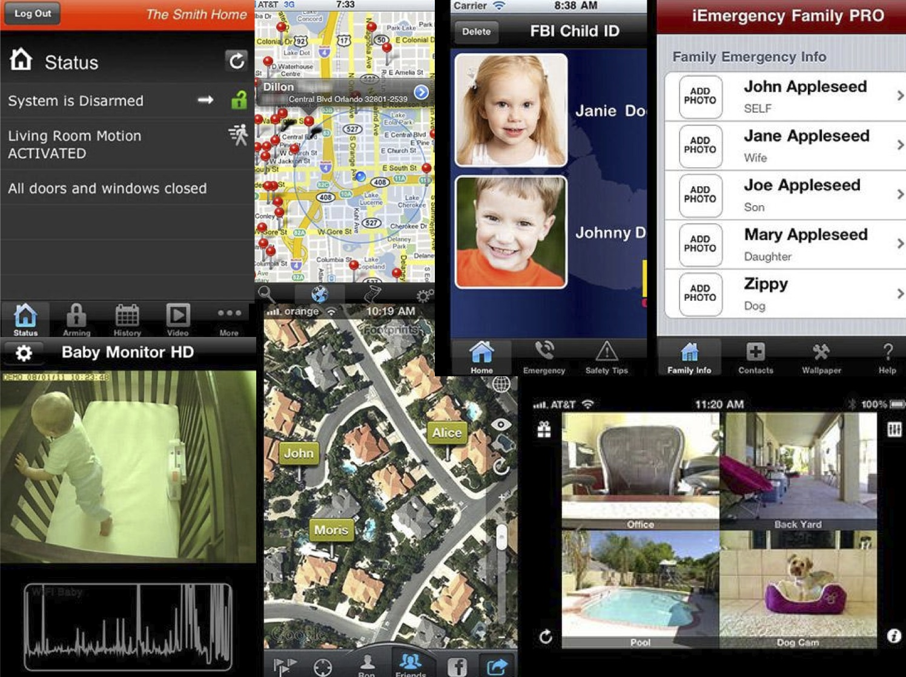

Falcon's research began with a competitive analysis, interviews, and persona development. Each led to understand that while parents may track kids for control and concern of safety, kids are left feeling they have no privacy or power. Falcon gives this control and awareness to kids and parents about locations, tracking, and explicit information about technological relationships.
1. Research
2. Personas
Martha: Martha is a busy mom as a full time dentist and has 3 kids. She tries to keep up with all her kids, but has a hard time always trusting where they are and what they're doing. She often calls, texts, and logs into her kid's social networks to make sure they're safe.
Mark: Mark is Martha's son, who is currently a high school junior. He's now able to drive and just found a girlfriend at his school. He knows his mom is sometimes paranoid that he's not doing the right thing or in the right place and wishes she would trust him.
Sasha: Sasha is a high school senior about to graduate and go to college. Sasha has an open relationship with her parents, and is even friends on Facebook with her parents. She finds that sometimes her parents forget to let her know when they're coming home, which makes her worry.
3. Competitive Analysis
Other apps let parents track their kids and manage all of their activities, but why not let kids track their parents? Parents are clearly concerned about a child's actions and their safety. For some parents, this leads to unknown tracking of their child. These apps encourage invasive methods of parents checking on children, reducing the trust and increasing control in the relationship. Rather than allowing a conversation to take place between the parent and child, parents are able to get any and all information, creating a one-way means of communication.
Conversely, Falcon lets kids track their parents. This lets kids know when they're being spied on as well as check up on their parents' safety. Through these interactions within families, actions are amplified and exaggerated within a story context. Hopefully, family members, both kids and parents, can approach each other about trust, control, and life questions to encourage healthy family relationships.

4. Quotes
Yes, I know all the information to my kid's social networks and e-mails. I need to know where they are and what they're doing. Oh yeah, I would know their passwords. If they tried to block me, I would tell them 'Hey, I'll take the internet away! It's easy to pull the plug!' Mom1
I trust my daughter, but it's fun to check up on her [with social networking] and see how's she's doing and where she is! Mom2
Sometimes I'd like to see if my mom's ok. If she says she's coming home at 10 and it's 11:30, is she ok? Teen
5. Game Rules
The rules are basic for Falcon: track and be tracked. More specifically, players can interact with others on different levels and become part of a story with those in their family. When logging into Falcon, players can see their notifications of who has surrendered their location and who has checked in on the player with the Logbook panel. Simply use the horizontal sliders to select the other player to spy on and which gadget to use. Gain spy karma through surrendering location (like checking in) or through others spying on the player. While the player may be gaining karma, the player may also be giving it to other players when checking in on them. Depending on the player's actions, they may begin to notice changes in the game, including their profile picture. As players interact with Falcon, Falcon will respond with setting up a mood based on the gadgets the players use.
6. Player Motivation
Players may find themselves receiving notifications from Falcon, either encouraging them to perform actions, finding items, or receiving spy karma. Some messages may sound like the angel on your shoulder, while others may sound like the devil on your shoulder. Falcon continues player engagement through small messages based on each relationship with other players.